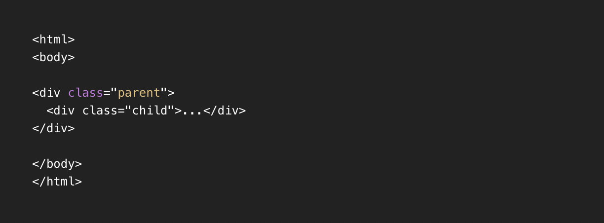
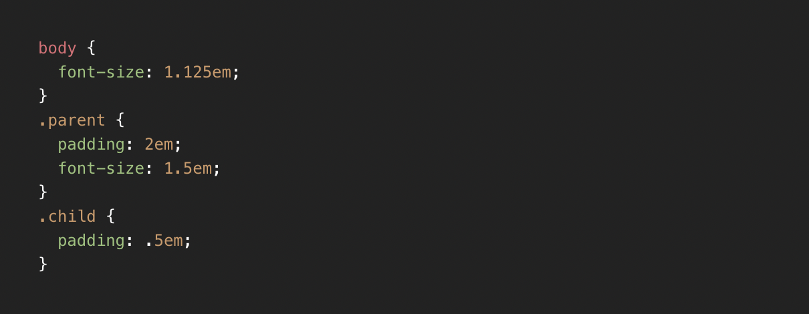
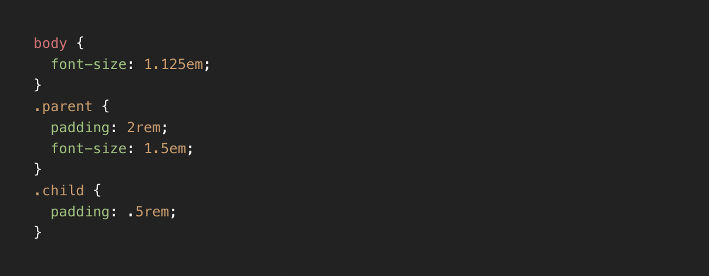

デバイスの1ドットを表す絶対的な値です。ただし、プリンターやスマホなどの高解像度デバイスでは1px内に複数のドットを含む場合があります。
現在、ほぼすべてのブラウザで小数点pxを表すことができますが、borderなど一部プロパティでは小数点pxを許容しない仕様もあります。
その要素自身のfont-size値を基準として相対的な値となります。たとえば、paddingプロパティに指定した場合を考えてみましょう。
.parentと.childのpaddingの値は何pxでしょうか？
次にその要素自身にfont-sizeが指定されている場合を考えましょう。
ルート要素（通常はHTML要素）のfont-size値を基準として相対的な値となります。
それでは先程と同じく考えていきましょう。
相対的な値となりますが、プロパティによって何が基準になるかが変わってきます。
たとえば、widthやmargin、paddingプロパティなら親要素の横幅に対する割合、heightプロパティなら親要素の高さに対する割合、font-sizeプロパティなら親要素の文字サイズに対する割合となります。
font-sizeに関してはemと同じです。
ブラウザの横幅に対する相対的な値となり、1vwはブラウザの横幅の1%、1vhはブラウザの縦幅の1%に相当します。
ただ、全体的なレイアウトなどにvw単位を使うと意図しない余白が生まれることがあります。vw単位はスクロールバーの幅を含む仕様のため、width: 100vw;を指定するとスクロールバーの幅分、横スクロールが発生します。
ぶっちゃけ何を使ってもいい
でも…